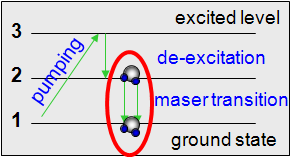

The acronym MASER, now a word in its own right, stands for Microwave Amplification by Stimulated Emisson of Radiation; it is the microwave-wavelength version of the laser. Stimulated emission is a form of spectral line emission.
Spontaneous emission happens when an atom (or molecule, or ion – they all contain electrons in ‘orbits’) in an excited state (i.e. with an electron in a high energy level) emits a photon and in so doing, moves to a lower energy state; the energy difference between the two levels is carried away by the photon. It is a spontaneous process and happens without external stimuli. Absorption happens when an atom (or molecule, or ion) absorbs a photon and in doing so, moves to a more excited state; an electron is moved to a higher energy level and the energy difference between the two levels is equal to the energy input from the photon. Spontaneous emission and absorption are both thermal processes: in thermal equilibrium, the number of atoms in different energy levels obeys the Boltzmann distribution equation.
In the case of stimulated emission, an incident photon causes the atom (or molecule, or ion) to emit 2 photons of the same frequency, phase and direction; they are called coherent. This can only happen when there is a ‘population inversion’ – this means that more atoms have electrons in the higher energy level than the lower one. This is a non-thermal process. To reach a situation of population inversion requires an external energy source, which is known as the ‘pumping mechanism’. The chain-reaction nature of this form of emission means that an incident photon is exponentially amplified by the gain medium and the resulting beam of maser emission is extremely focused and coherent.

Many different masers occur in astrophysical environments. Amongst the most common are those of the molecules of hydroxyl (OH), water (H2O), methanol (CH3OH) and silicon monoxide (SiO). Oxygen-rich evolved stars host SiO, OH and H2O masers in their circumstellar envelopes, while star-forming regions display emission from OH, H2O and CH3OH. Megamasers are extragalactic masers which are a million times as luminous as those seen in the Milky Way. OH megamasers are seen in far infrared-bright galaxies that host AGN. H2O megamasers have been detected orbiting the innermost few parsecs of AGN.
Masing action requires particular environmental conditions viz. density, temperature, gain length. As such, observations of masers can be used to probe the chemical and physical conditions in the object in which they occur. Because of their high brightness temperatures (TB > 109 K) and compact sizes, masers can be used to trace spatio-kinematic (three-dimensional) structures with the highest available resolution, VLBI. It is for these reasons that they are suitable for tracing the structures and kinematics of e.g. the optically-opaque circumstellar envelopes of evolved stars.